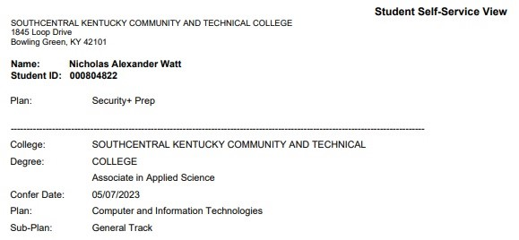
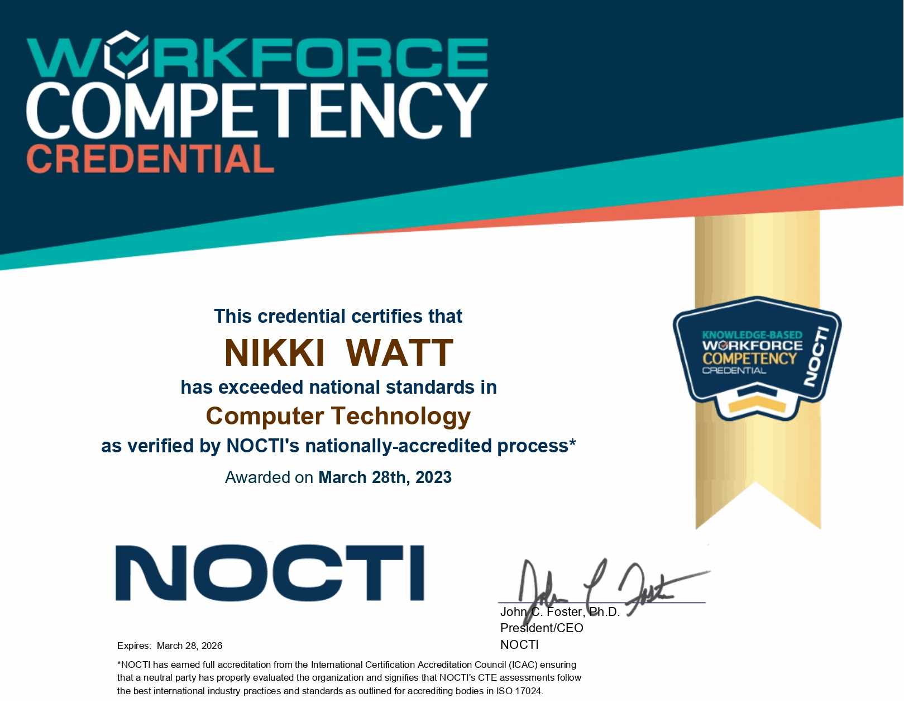
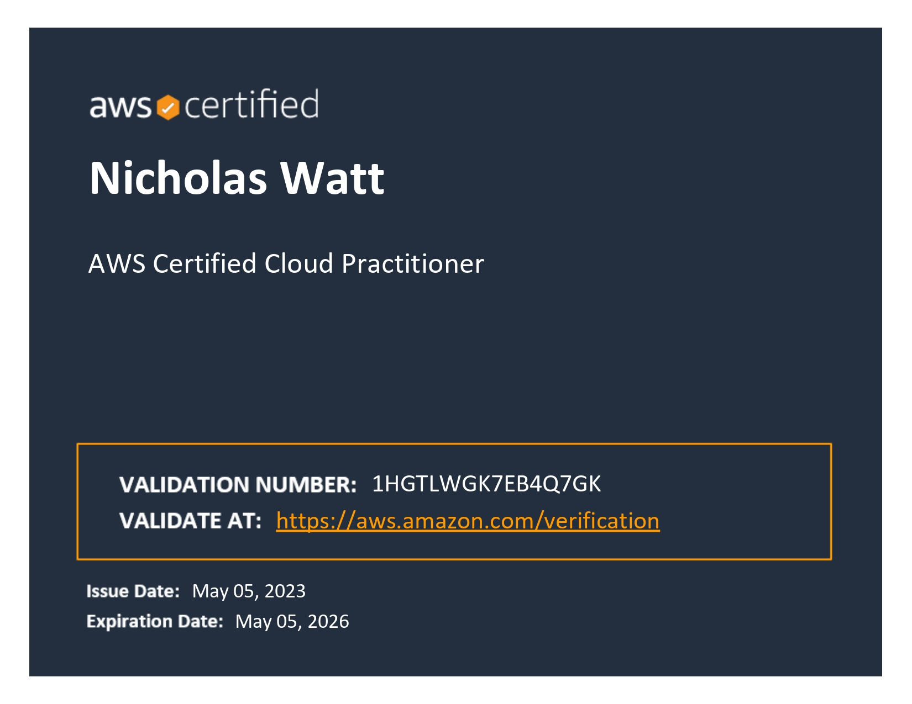

TestOut Certification
As you can see from the certificate, TestOut handles all kinds of computer related services. This certification proves I know how to build, troubleshoot, and fix a computer. I know about all kinds of devices from printers to projectors. Most importantly, I know how to help you effeciently use whatever device you're working with.
Associates' Degree in CIT
As of the spring 2023 semester, I am proud to say I have graduated with my Computer and Information Technologies Associates' Degree from Southcentral Kentucky Community and Technical College. I'm very excited to earn this and continue my education.
NOCTI Workforce Competency Credential
During my final semester at SKYCTC, I completed the NOCTI exam. This certification demonstrates that I have a working knowledge of best international industry practices and strandards for CIT.
AWS Cloud Practitioner Certification
As of May 5th, 2023; I've completed my AWS Cloud Practitioner training. This certification demonstrates that I understand the AWS Dashboard and products well enough to work with an AWS-integrated network.